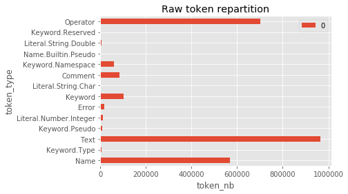
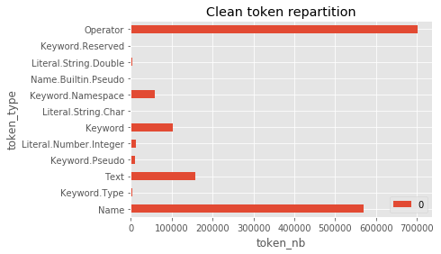
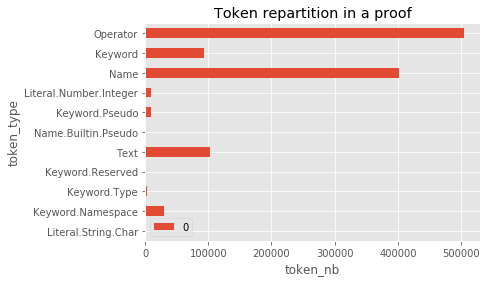

Data
Sources
Homotopy Type Theory
UniMath repository
Preprocessing
-
make preprocess- Download data from the Git repositories
- Iterate over the files in repositories to parse the file name and the package the file (and therefore it's constructs) are located in.
- Use the
pygmentslexer to turn source code into raw token stream - Store that token stream to filesystem, keeping only metadatas
- Package each one into a separated self-contained csv file
data/agg.csv
-
TODO:
- Resolve dependencies for each definition
- Create train and test dataset of proofs from
data/agg.csv
Example
| type | Raw |
|---|---|
| Raw input | Here |
| Token stream | Here |
| CSV dataset | Here |
Raw input
Definition equiv_ind_comp `{IsEquiv A B f} (P : B -> Type)
(df : forall x:A, P (f x)) (x : A)
: equiv_ind f P df (f x) = df x.
Proof.
unfold equiv_ind.
rewrite eisadj.
rewrite <- transport_compose.
exact (apD df (eissect f x)).
Defined.
Token stream
Keyword.Namespace 'Proof'
Operator '.'
Keyword 'unfold'
Name 'equiv_ind'
Operator '.'
Keyword 'rewrite'
Name 'eisadj'
Operator '.'
Keyword 'rewrite'
Operator '<-'
Name 'transport_compose'
Operator '.'
Keyword.Pseudo 'exact'
Operator '('
Name 'apD'
Name 'df'
Operator '('
Name 'eissect'
Name 'f'
Name 'x'
Operator ')'
Operator ')'
Operator '.'
Keyword.Namespace 'Defined'
Aggregated CSV dataset
,file_id,token_id,file,token,raw,proof_context,proof_id
0,0.0,0.0,/automaths/data/objs/HoTT/theories/ExcludedMiddle.vo,Keyword.Namespace,Require,,
1,0.0,1.0,/automaths/data/objs/HoTT/theories/ExcludedMiddle.vo,Text, ,,
2,0.0,2.0,/automaths/data/objs/HoTT/theories/ExcludedMiddle.vo,Keyword.Namespace,Import,,
3,0.0,3.0,/automaths/data/objs/HoTT/theories/ExcludedMiddle.vo,Text, ,,
...
15546,590.0,15546.0,/automaths/data/objs/UniMath/UniMath/PAdics/lemmas.vo,Keyword,apply,,91652a12-40a4-4e5d-ba1e-4cceee1a28a0
15547,590.0,15547.0,/automaths/data/objs/UniMath/UniMath/PAdics/lemmas.vo,Text, ,,91652a12-40a4-4e5d-ba1e-4cceee1a28a0
15548,590.0,15548.0,/automaths/data/objs/UniMath/UniMath/PAdics/lemmas.vo,Name,i,,91652a12-40a4-4e5d-ba1e-4cceee1a28a0
15549,590.0,15549.0,/automaths/data/objs/UniMath/UniMath/PAdics/lemmas.vo,Operator,.,,91652a12-40a4-4e5d-ba1e-4cceee1a28a0
15550,590.0,15550.0,/automaths/data/objs/UniMath/UniMath/PAdics/lemmas.vo,Text,\n,,91652a12-40a4-4e5d-ba1e-4cceee1a28a0
15551,590.0,15551.0,/automaths/data/objs/UniMath/UniMath/PAdics/lemmas.vo,Keyword.Namespace,Defined,leave,91652a12-40a4-4e5d-ba1e-4cceee1a28a0
Analysis
Token types
Repartition of the tokens on the raw dataset (data/agg.csv) containing the whole token streams.

Data cleaning operations :
- Remove empty texts tokens as they are irrelevent to learn
- Removed comments tokens
- Removed file with lexing errors

Tokens located directly in proofs, including definitions.
